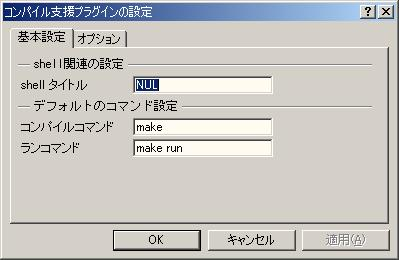
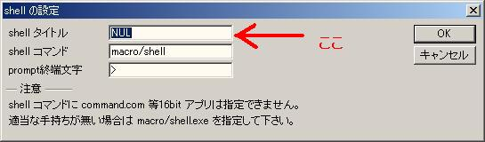

WZには、t_kumagaiさんが作られた「shellモードプラグインマクロ」と言う物があります。shellモードプラグインはWZの中で、shell(コマンドプロンプト)を実行出来てしまうという素晴らしいマクロなのです。それが出来ると何が良いかと言うと、コンパイル後エラーがあったらエラー文を読んで、ファイルを探して開いて、エラーへ移動する、という作業がWZ搭載のタグジャンプ機能で実現出来るわけです。こいつは、便利です。
しかし、僕は極度にマウス操作が嫌いな人間でして（だってマウス使うと肩こるじゃん！）。そんな僕が、ソース編集→shellをアクティブにしてコンパイルという１日に何度繰り返すか分からない作業をマウスで行うのに耐えられなくなって作ったのが、このマクロです。
WZを使っている人でどの位の人がemacsを使った事があるか分かりませんが、emacsは、エディタで編集→コンパイル→エラージャンプ→編集→コンパイルが出来るのです。あれを目指したのです。
このマクロはWZ 4.00E + shellモードプラグイン0.02 windows 2000で動作確認をしています。
これ以外のwindows環境でも動くと思いますが、windows 2000環境で必ずウインドがアクティブになるようにする都合上、windows2000から追加された設定項目を読んでいる箇所があります。そのため、それ以外のwindows環境では、不具合が出るかもしれません。その場合は、言っていただければオプションメニューにその設定を利用するかどうかを追加します。
すでに、「shellモードプラグイン」を使っている方は、この章を読み飛ばして頂いてかまいません。
何よりも先に、t_kumagaiさん作「shellモードプラグイン」を入手しプラグインマクロとして登録してください。これがないと使えません。t_kumagaiさんに感謝！
初めて、「shellモードプラグイン」をインストールした方は、この段階でshellを開いて、dirなどのコマンドがちゃんと動くか確かめておくと、あとでトラブルが起きたときに原因究明の足がかりになるかもしれません。
次に、compile4shell.txcをマクロフォルダにコピーし、プラグインマクロに登録します。インストール作業は以上です。今後のために、このマニュアルフォルダを丸ごとマクロフォルダの下などにコピーしておくと、良いかもしれません。
以下が、コンパイル、実行、エラージャンプをする関数名です。。
| sendCompileCommandMsg | コンパイルコマンドで指定したコマンドをshellで実行します。 |
| sendRunCommandMsg | 実行コマンドで指定したコマンドをshellで実行します。 |
| sendErrorJumpMsg | shell内のエラー箇所を探し、ファイルを開きます。 |
これらの関数を、特定のキーに割り当てるか、マクロを実行などから呼んで利用してください。
僕は、以下のようなVisual C++と同じキーバインドを利用しています。
| sendCompileCommandMsg | F7 |
| sendRunCommandMsg | F5 |
| sendErrorJumpMsg | F4 |
また、M.Ishidaさん作のmaclistマクロを利用されている方は、以下の名前で各関数が表示されるので、それを選択する事により、コンパイル、実行、エラージャンプをすることができます。
| sendCompileCommandMsg | コンパイル |
| sendRunCommandMsg | 実行 |
| sendErrorJumpMsg | エラージャンプ |

| shellタイトル |

上図にあるshellの設定で入力した「shellタイトル」と同じ文字列を設定します。 本マクロは、ここに設定されたウインドウのキャプションを持つWZを検索し、見つかった物をshellと思って動きます。故に、正しいshellのタイトルを設定してください。ここが間違っていると、かなり悲しいことになります。 |
| コンパイルコマンド |
ディレクトリ個別の設定がない場合に、利用するコンパイル用コマンドを設定します。 |
| 実行コマンド |
ディレクトリ個別の設定がない場合に、利用する実行用コマンドを設定します。 |
| ファイル保存の前に確認する |
チェックされている場合は、「コンパイル」「実行」コマンドを呼び出し時に、ファイルが編集されている場合、保存するかどうかを確認するダイアログを出します。 チェックされていない場合、自動でファイルを上書き保存しコマンドを呼び出します。 |
| コマンド実行前にshellをクリアする |
チェックされている場合、「コンパイル」「実行」コマンドをshellで実行する前に、shellの内容を削除します。 |
| shellをアクティブにする |
チェックされている場合は、「コンパイル」「実行」「エラージャンプ」時に、shellをアクティブにします。 チェックされていない場合、shellをアクティブにしません。ただし、初めてshellを起動した場合は、shellがアクティブになります。これは、仕様です(＾＾; |
| 呼び出し元ファイルをアクティブにする |
チェックされている場合、「コンパイル」「実行」「エラージャンプ時にエラーファイルが見つからなかった場合」それらのコマンドを実行したファイルをアクティブにします。 ただし、「エラージャンプ時にエラーファイルが見つかった場合」は、エラーファイルをアクティブにします。 |
「shellをアクティブにする」と「呼び出し元ファイルをアクティブにする」の両方にチェックを入れた時の振る舞い：
まず「shellのウインドウ」がアクティブになり、その後すぐに「呼び出しもとファイル」がアクティブになります。
「ディレクトリ個別の設定」とは、特定のディレクトリ以下のファイルに対し、共通のコンパイルコマンド、実行コマンド、コンパイルディレクトリ、実行ディレクトリを設定することです。
設定ファイルは、WZをインストールしたディレクトリにcompile4shell.txtと言う名前で保存します。設定ファイルには以下のような構造になります。
| 先頭が「.」で始まる行 |
この設定を適用するディレクトリ このディレクトリ以下全てのファイルにこの設定を適用します |
| COMPILE_COMMAND |
コンパイルに使うコマンド |
| COMPILE_OPTION |
コンパイルコマンド用オプション |
| COMPILE_DIR |
コンパイルに使うディレクトリ |
| RUN_COMMAND |
実行に使うコマンド |
| RUN_OPTION |
実行コマンド用オプション |
| RUN_DIR |
実行に使うディレクトリ |
また、「COMPILE_DIR」「RUN_DIR」」には、以下の項目を設定する事が出来ます。
| $(FILE_DIR) |
ファイルのあるディレクトリ
|
| $(NO_CHANGE) |
ディレクトリを変更しません 何も指定しない場合は、これと同じ動作になります |
例
.D:\hogehoge
COMPILE_COMMAND = make
COMPILE_OPTION =
COMPILE_DIR = $(FILE_DIR)
RUN_COMMAND = make
RUN_OPTION = run
RUN_DIR = D:\hogehoge
上記の用に設定ファイルに記述し、D:\hogehoge\source\abc.cppとうファイルを開いている状態で、sendCompileCommandMsg関数を呼び出した場合、
shellのカレントディレクトリは、「D:\hogehoge\source」に変更され、「make」コマンドを実行します。
また、sendRunCommandMsg関数を呼び出した場合、
shellのカレントディレクトリは、「D:\hogehoge」に変更され、「make run」コマンドが実行されます。
| javac |
javacコンパイラ用の設定 |
| BCC |
Borland C++ Compiler用の設定です。 |
| ant |
ant用の設定です。 |
| その他 |
エラー行検索条件 エラーファイル抽出条件 エラー行番号抽出条件 を指定します。 |
その他を選択した場合は、「エラー行検索条件」「エラーファイル抽出条件」「エラー行番号抽出条件」をWZ4標準の正規表現で指定します。javacスタイル、BCCスタイルを選択しても、上手くエラーファイルジャンプが出来ないコンパイラの場合にこちらを指定してください。(gccくらはサポートした方が親切かも・・・）
ここでは、BCCの場合を例に説明します。BCCの設定は以下のようになっています。
| エラー行検索条件 | ^エラー.+ |
| エラーファイル抽出条件 | <[^\s]+\.[^\s]+> |
| エラー行抽出条件 | [0-9]+ |
BCCは以下のような以下のようなエラーメッセージを出力します。
bcc32 -c hello.cpp
Borland C++ 5.5.1 for Win32 Copyright (c) 1993, 2000 Borland
hello.cpp:
エラー E2451 hello.cpp 7: 未定義のシンボル cout(関数 main() )
エラー E2451 hello.cpp 7: 未定義のシンボル endl(関数 main() )
*** 2 errors in Compile ***
この場合、エラー行検索条件「^エラー.+」により、以下の色が変わっている行が見つかります。
bcc32 -c hello.cpp
Borland C++ 5.5.1 for Win32 Copyright (c) 1993, 2000 Borland
hello.cpp:
エラー E2451 hello.cpp 7: 未定義のシンボル cout(関数 main() )
エラー E2451 hello.cpp 7: 未定義のシンボル endl(関数 main() )
*** 2 errors in Compile ***
本マクロでは、エラー行を見つけた場合、エラー行のパラグラフ文字列をtxGetParaを使って取り出します。表示例の場合は、
エラー E2451 hello.cpp 7: 未定義のシンボル cout(関数 main() )
が取り出されます。次に、この取り出された文字列に対し、エラーファイル抽出条件「<[^\s]+\.[^\s]+>」を使い検索をして
エラー E2451 hello.cpp 7: 未定義のシンボル cout(関数 main() )
選択部分が抽出されます（この場合「hello.cpp」）。これをファイル名とします。
次に、対象文字列が、ファイル名以降に変更されます。今回の場合、
7: 未定義のシンボル cout(関数 main() )
これに、エラー行抽出条件「[0-9]+」を使い検索をし、
7: 未定義のシンボル cout(関数 main() )
「7」が見つかります。これを行番号とし、ファイルを開きます。
以上が、エラー行ジャンプ用の設定方法です。もし、自前で設定を作ったら作者にメールをくれると、次回以降のリリース時に標準でサポートされるかもしれません。
もともとこのマクロは手に馴染むJava開発環境がないので、それを開発すべく作り始めたのです。そこで、僕のjavac用設定を紹介。（Java1.2以降のコンパイラでないと動作しなかったと記憶してます。）
まず、パッケージのルートディレクトリに、以下のようなバッチファイルを作って置いておきます。
@echo off
set OUT_DIR=（ここに出力先ディレクトリを設定）
set SOURCE_DIR=（ここにパッケージのディレクトリを設定）
set CLASS_PATH=%SOURCE_DIR%
set JAVAC=javac
set JAVAC_FLAG=-nowarn
set FILE_LIST=__FILE_LISE__
dir /B /S *.java > %FILE_LIST%
echo compile source ...
%JAVAC% %JAVAC_FLAG% -classpath %CLASS_PATH% -d %OUT_DIR% @%FILE_LIST%
del %FILE_LIST%
（ここに出力先ディレクトリを設定）と書いてある部分を、出力先ディレクトリで置き換えます。また、（ここにパッケージのディレクトリを設定）となっている部分はパッケージのルートディレクトリで置き換えます。例えば、パッケージルートディレクトリが、D:\hoge\src、出力先ディレクトリがD:\hoge\classesだとすると、バッチファイルは以下のようになります。これを、compile.batという名前でD:\hoge\srcに保存しておきます。
@echo off
set OUT_DIR=D:\hoge\classes
set SOURCE_DIR=D:\hoge\src
set CLASS_PATH=%SOURCE_DIR%
set JAVAC=javac
set JAVAC_FLAG=-nowarn
set FILE_LIST=__FILE_LISE__
dir /B /S *.java > %FILE_LIST%
echo compile source ...
%JAVAC% %JAVAC_FLAG% -classpath %CLASS_PATH% -d %OUT_DIR% @%FILE_LIST%
del %FILE_LIST%
次に、WZのあるディレクトリの「compile4shell.txt」ファイルに、
.D:\hoge\src
COMPILE_COMMAND = compile.bat
COMPILE_DIR = D:\hoge\src
と記述します。あとは、D:\hoge\src以下のソースを編集して、コンパイルコマンドを呼び出せば、自動で、D:\hoge\srcへ移動しcompile.batを実行してくれる訳です。このバッチファイルでコンパイルした場合は、エラーファイル名がフルパスで出てくるので、エラー行が長くなり多少見にくくはなりますが、確実にファイルを開けて便利です。
本ソフトウエアはあるがままに提供されます。
本ソフトウエアは、各ユーザーの自己責任の元にご利用下さい。使用によって生じたいかなる損失も著作者は責任を負いません。重大なバグが顕在化したとしても、修正の義務を持ちません。
このマクロプログラムは、使用はもちろんのこと配布、改変版の作成も自由です。GNUのオープンソースのルールに従っていただけると幸いです。
コンパイラ事の設定(ant)を追加。
コンパイラ事の設定(javac, BCC)を追加。
設定ファイルからコンパイルディレクトリなどの設定を読み込めるよう変更
設定ダイアログが使えるように変更
shell実行時にウィンドウのアクティブが出来るように変更
とりあえず、動くバージョンを友人に公開
本マクロは、僕が勝手にshellモードプラグインプラグインを作った物です。当プラグインにまつわるバグに関し、shellモードプラグインの作者t_kumagai氏に文句を言うような事は辞めてください。そのような、文句、提案、愚痴は当方で受け付けます。
また、最後になりましたが、
shellモードプラグインの作者t_kumagai氏に感謝します。shellモードプラグインがなければ、このプラグインを作ろうと思うことはなかったでしょう。
maclistプラグインの作者M.Ishida氏にも感謝します。大変便利に使わせて頂いております。
htmlplusプラグインの作者 瑞輝智佳 氏にも感謝します。htmlplusプラグインの終了タグ補完機能がなかったら、当マニュアルを作る気にはなれなかったことでしょう。